0. Sequence your sample
You will need to sequence your sample using one of the available DNA sequencers. Shown here is the MinION sequencer from Oxford Nanopore that connects to a laptop via USB. There are also petabytes of public data available in different archives around the world, including the NCBI Sequence Read Archive (SRA).
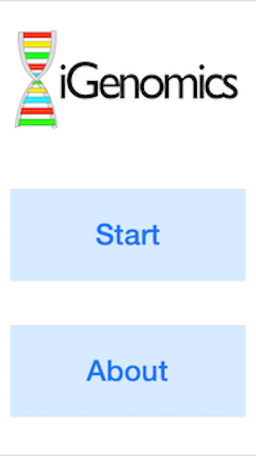
1. Launch the app and click start to begin.
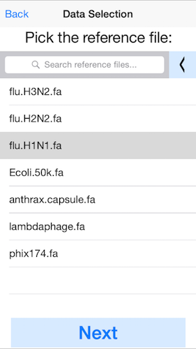
2. Select the reference genome.
In this example, pick the H1N1 flu reference genome. You can load your own reference genome from Dropbox by selected the left arrow at the top (next to "Search reference files"). For best performance, we recommend genome files less than 1Mbp.
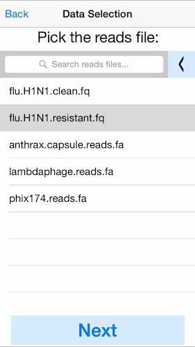
3. Select the DNA sequences (reads) to analyze.
This can be a fastq file from any platform (Illumina, Ion Torrent, PacBio, Oxford Nanopore, etc). Here we will select simulated reads from the H1N1 flu strain. Again click the left arrow at the top to load your own data from Dropbox. For best performance we recommend aligning at most 50Mbp of sequence data.
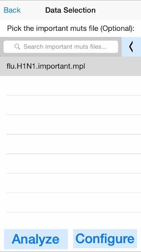
4. Optionally select the known important mutations.
In this example, we will load an important mutations file (mpl) containing the position of several SNPs relevant for flu antiviral treatments. If you do not have a predefined list of mutations, click next without selecting any files.
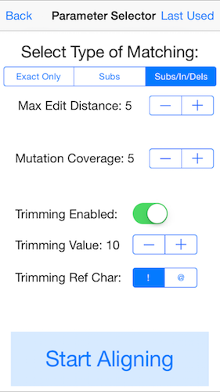
5. Select the parameters for mapping the reads.
For these data, enable the "Subs/In/Dels" mode, edit distance 5, mutation coverage 5, trimming enabled, trimming value 10, and trimming ref char as "!". This will trim off low quality bases at the ends of the read (below QV 10), and map the reads with up to 5 substitutions, insertions, or deletions. Variants will be called whenever there are 5 or more reads at a given base that disagree with the reference. You may need to adjust these settings for different sequencing instruments and/or data types
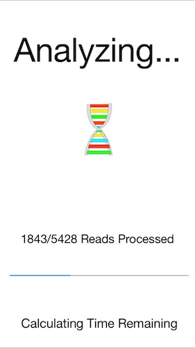
6. The progress bar will show the reads as they are aligned.
In this example it will take 2 to 3 seconds to align the 5428 flu reads to the reference.

7. The next view is a menu of available analysis modes.
Click the "Show Alignments" button to display the individual read alignments.
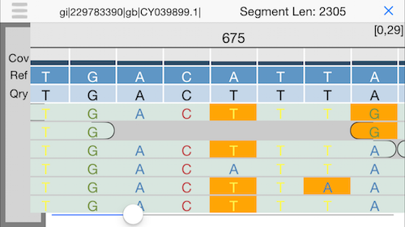
8. Alignment view
This will display an IGV-like interface with the individual reads aligned the reference. Use the slider at the bottom or drag your finger to explore.
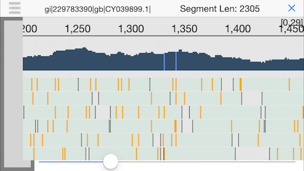
9. Semantic zooming
Pinching the display will zoom out to show the coverage across the genome and highlight any positions with a mutation. Since we have good coverage across the H1N1 flu reference genome, we can be quite sure this person was infected by the flu.
10. Return to the summary screen
Clicking the icon in the top left corner (three little horizontal bars) will return to the summary menu.
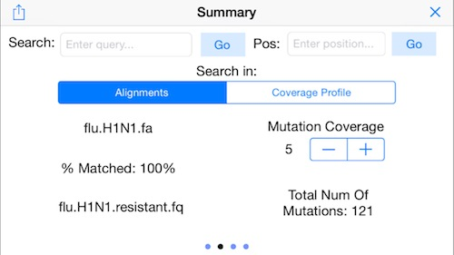
11. Display Mapping Statistics
Swipe to the right to display the other menus. Here we see a summary of the mapping rate (100% of the reads mapped) and the number of identified mutatations (121 SNPs). Use the mutation coverage control to set the number of conflicting reads needed to identify a mutation.

12. Display the Reference Picker
Swipe again to the right to bring up the "reference picker" which lets you jump to different sequences in the reference genome. In this example, this will jump the display to the different segments of the flu genome.
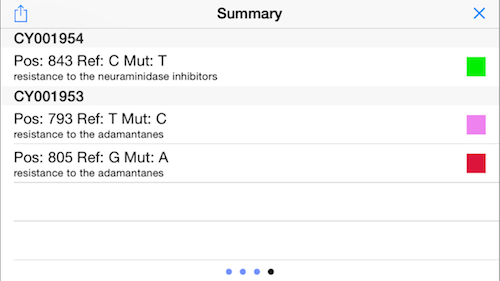
13. Display Mutation Status
Swipe again to the right to display the status of the important mutations (see above). In this example, the virus has a homozygous and a heterozygous mutation that infers resistance to the adamantanes, but no mutations associated with neuraminidase inhibitors!
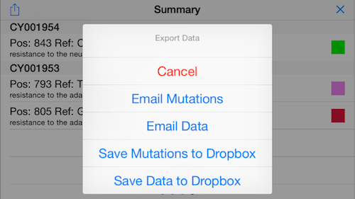
14. Email results
Click the icon on the top left to bring up a menu to export the results. For example, you can email the antiviral screening results to your primary care provider!